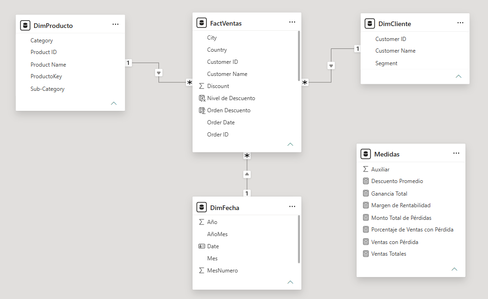
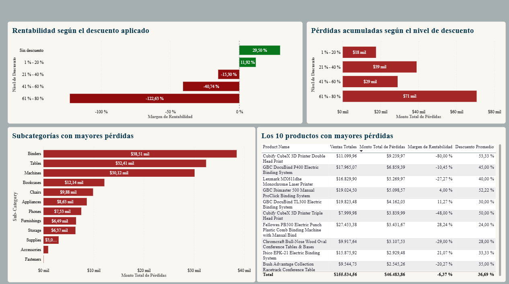

Ventas, rentabilidad
y descuentos
Análisis de una cadena minorista estadounidense, 2021–2024
| Ventas totales | Utilidad neta | Margen de utilidad | Descuento promedio | Pérdidas acumuladas |
|---|---|---|---|---|
| USD 2,30 mill. | USD 286,30 mil | 12,47 % | 15,62 % | USD 156,06 mil |

1. Definición del problema, contexto y preguntas
La empresa vende productos de tres categorías (Muebles, Suministros de oficina y Tecnología) y aplica descuentos con frecuencia como parte de su estrategia comercial. La exploración inicial mostró que, aunque las ventas crecen, una parte importante de las operaciones registra utilidades negativas. Si los descuentos se aplican sin control, la empresa puede estar vendiendo más pero ganando menos.
Pregunta principal: ¿Cómo influyen los descuentos en la rentabilidad de las categorías de productos y dónde se concentran las principales pérdidas?
- ¿Cómo evolucionaron las ventas y la utilidad entre 2021 y 2024?
- ¿A partir de qué nivel de descuento el margen de rentabilidad se vuelve negativo?
- ¿Qué categorías y subcategorías concentran el mayor monto de pérdidas?
- ¿Qué productos generan las mayores pérdidas y con qué niveles de descuento se venden?
2. Obtención de datos
La base fue proporcionada por la profesora Melissa Gamboa con fines académicos y se importó a Power BI Desktop mediante Power Query. Contiene 10.084 registros, donde cada uno corresponde a una línea de pedido, con información de ventas, productos, clientes, ubicación, descuentos y utilidad.
3. Limpieza y transformación de datos (ETL)
| Etapa | Registros | Cambio |
|---|---|---|
| Base original | 10.084 | — |
| Eliminación de registros con errores | 10.076 | −8 (0,08 %) |
| Eliminación de registros duplicados | 9.987 | −89 (0,88 %) |
- Errores: los 8 registros tenían errores en Sales, Quantity, Discount y Profit, las variables base de todos los indicadores. No era posible reconstruir esos valores sin inventar información y representan solo el 0,08 % de la base, por lo que se eliminaron.
- Duplicados: se consideró duplicado un registro idéntico a otro en todos sus campos. Un Order ID repetido no es un duplicado, porque un pedido puede tener varios productos. Mantenerlos habría contado dos veces las mismas ventas, utilidades y pérdidas.
- Valores atípicos: las utilidades negativas y los valores extremos se conservaron, porque son operaciones reales y son justamente el objeto de estudio.
- Formatos: se asignó a cada variable su tipo correcto (texto, número entero, decimal, fecha y porcentaje).
- Columnas: se eliminaron Number, Country y Postal Code. Row ID se conservó como identificador único de cada línea de venta.
- Nueva columna: se creó Nivel de Descuento, que agrupa el descuento en cinco rangos (Sin descuento, 1–20 %, 21–40 %, 41–60 % y 61–80 %).
4. Modelado de datos
Se construyó un modelo en estrella: la tabla de hechos FactVentas se relaciona (uno a varios) con las dimensiones DimProducto, DimCliente y DimFecha. Las medidas DAX se agrupan en una tabla Medidas: Ventas Totales, Ganancia Total, Margen de Rentabilidad, Descuento Promedio, Monto Total de Pérdidas, Ventas con Pérdida y Porcentaje de Ventas con Pérdida.

5. Visualización de datos
El dashboard va de lo general a lo específico en dos páginas. El verde marca resultados positivos y el rojo, pérdidas. La página Resumen General (arriba) muestra los indicadores clave, la relación entre descuento y utilidad de cada registro y las pérdidas por categoría. La página Análisis de Rentabilidad y Pérdidas (abajo) profundiza en el margen por nivel de descuento, las subcategorías con más pérdidas y los 10 productos que más pierden. Los filtros de categoría, segmento y fecha permiten explorar todo el análisis.

6. Principales hallazgos
- Las ventas crecen, pero también las pérdidas importan. Las ventas pasaron de USD 470,53 mil en 2022 a 732,48 mil en 2024. Aun así, las pérdidas acumuladas (156,06 mil) equivalen a más de la mitad de la utilidad neta (286,30 mil).
- Desde el 21 % de descuento, el margen es negativo. Sin descuento el margen es de 29,50 % y con 1–20 % de 11,92 %. En cambio, baja a −15,30 % (21–40 %), −40,74 % (41–60 %) y −122,63 % (61–80 %). Cerca del 89 % de las pérdidas ocurre con descuentos mayores al 20 %.
- Muebles es la categoría menos rentable. Acumula 61 mil en pérdidas y, con ventas de 741,53 mil, deja solo 18,43 mil de utilidad neta.
- Tres subcategorías explican cerca del 65 % de las pérdidas. Binders (38,51 mil), Tables (32,41 mil) y Machines (30,12 mil).
- Los productos con más pérdidas se venden con descuentos altos. Los 10 productos con mayores pérdidas suman 46,48 mil, con un descuento promedio de 36,69 %, más del doble del promedio general (15,62 %).
7. Recomendaciones
- Revisar la política de descuentos y exigir aprobación para descuentos superiores al 20 %.
- Analizar precios, costos y descuentos en Muebles, en especial en Tables y Bookcases.
- Revisar en qué condiciones se venden con pérdida los productos de Binders.
- Monitorear de forma periódica los 10 productos con mayores pérdidas.
- Incorporar datos de costos para confirmar si los descuentos son la causa principal de las pérdidas.
Herramientas
Power BI Desktop · Power Query · DAX